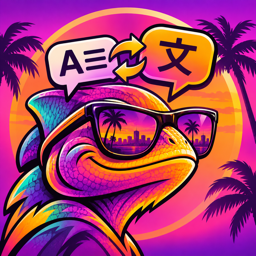
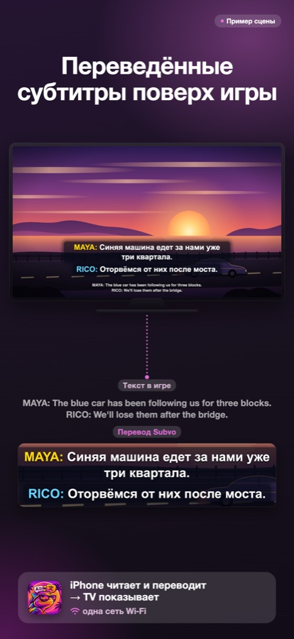
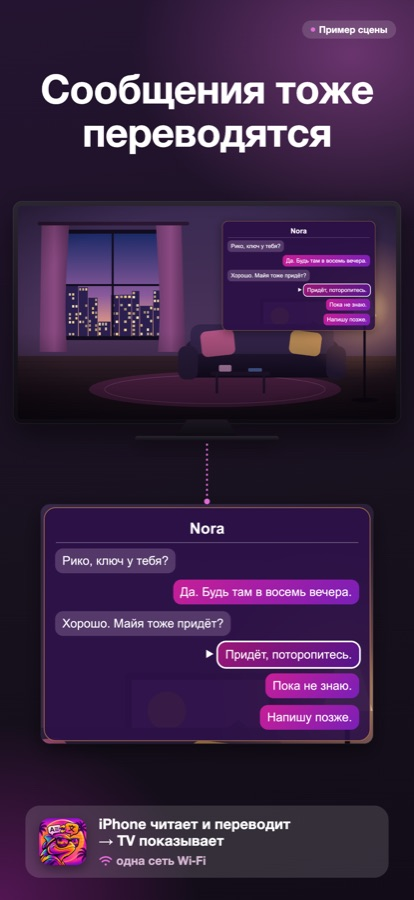
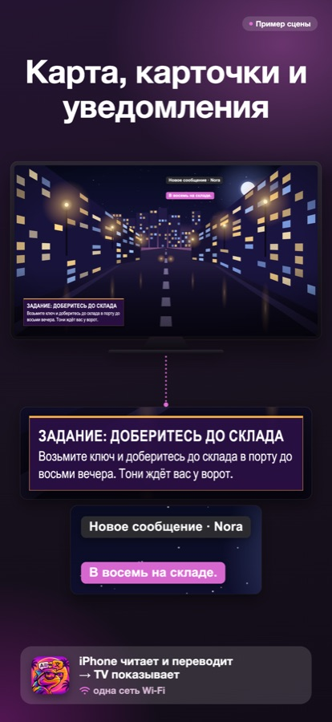
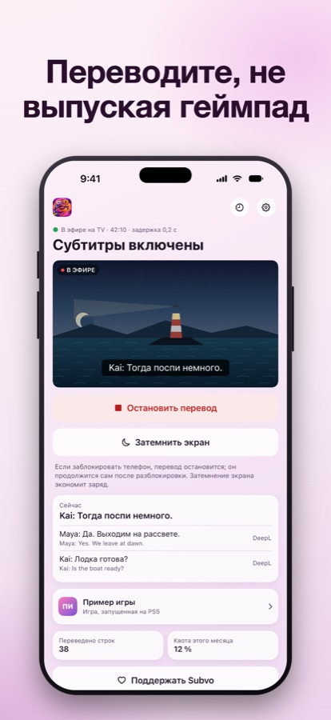
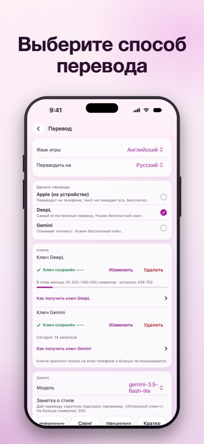
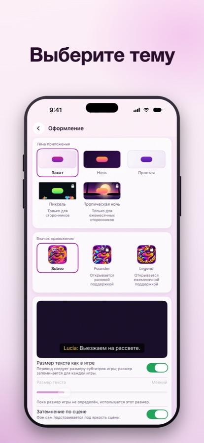

SubvoSubvo читает на iPhone текст из вашей игры на PS5, переводит его и показывает перевод на телевизоре прямо поверх игры. Геймпад откладывать не нужно.
Бесплатно и без рекламы. iPhone, PlayStation 5 и телевизор Samsung или LG.

Кроме диалогов, в поддерживаемых играх Subvo переводит сообщения на игровом телефоне, новости, карточки заданий и уведомления, которые появляются в углу экрана.
Имя говорящего сохраняет цвет из игры, а перевод закрывает собственные субтитры игры.

Переписка на игровом телефоне переводится прямо на месте облачков сообщений.

Карточки заданий и карты, всплывающие сбоку сообщения и подсказки в углу тоже переводятся.
К вашей собственной PS5 через Remote Play. Вы входите в учётную запись Sony на странице самой Sony; Subvo никогда не видит ваш пароль.
Текст распознаётся на самом телефоне. Переводит встроенный переводчик Apple на устройстве или, если хотите, ваш собственный ключ DeepL или Gemini.
Перевод появляется поверх игры в приложении Subvo TV в той же сети Wi-Fi. Установить приложение на телевизор поможет телефон.
MAYA: The blue car has been following us for three blocks.
RICO: We'll lose them after the bridge.
MAYA: Синяя машина едет за нами уже три квартала.
RICO: Оторвёмся от них после моста.
Для некоторых игр готовый пакет перевода (на турецкий) скачивается сам. Строки из пакета появляются мгновенно и без интернета. В пакете для Grand Theft Auto VI больше 738 тысяч строк, есть и арабская версия.
В остальных играх и на остальные языки переводит выбранный вами движок. Всего языков перевода — 12.
Нет PS5? Попробуйте пример сцены через «Как это работает» в приложении.
Размер текста, цвет, фон и расположение меняются в настройках. Приложение доступно на семи языках.



Subvo — приложение с открытым исходным кодом под лицензией AGPL-3.0. Исходный код и сведения о лицензии — на GitHub.
Вопросы, проблемы и предложения: subvo2026@gmail.com
Чтобы проблему было проще исправить, приложите запись из раздела Настройки › Расширенные › «Сообщить о проблеме». Укажите также модель телефона, версию iOS и марку телевизора.